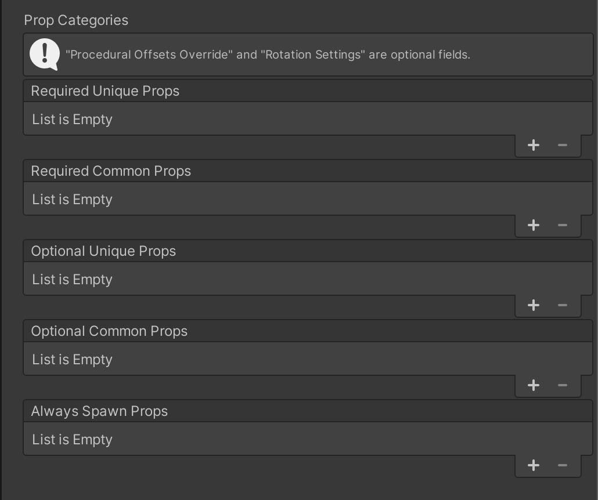
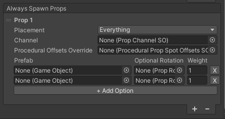
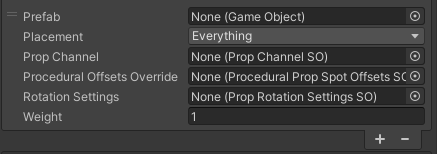

Prop Categories
Prop Categories are located on Area Definitions and Tile Module Definitions. Props assigned in Area Definitions can spawn only in rooms and corridors that use that Area Definition. Props assigned in Tile Module Definitions can spawn in any rooms and corridors whose Area Definition uses the respective Tile Module Definitions.

Defining Prop Categories
Required Unique Props
Exactly 1 of each of these prop definitions will be placed in the area.
Required Common Props
At least 1 of each of these prop definitions will be placed in the area.
Optional Unique Props
At most 1 of each of these props definitions will be placed in the area.
Optional Common Props
Any number (0+) of each of these props definitions will be placed in the area.
Always Spawn Props
This category functions differently from the other categories. Prop Density is ignored. Each entry is like a layer with its own list of possible props. Each entry/layer is assigned a placement type, and will do a weighted random selection of one of its prefab options for each Prop Spot and Procedural Prop Spot in the area that matches the placement type, regardless of whether the spot was already used for another prop from another category. It will still respect the overlap threshold though. Example: If you want a light to be placed at each room corner, and you have 3 different light options, you can guarantee that each room corner will have 1 of the 3 light options.

Defining Props
Each entry in a list defines a prop and how/where it can be placed. Each category generally uses the same settings, but note that the Required Unique props do not have “weight” as they are each spawned exactly once, whereas the other categories use weight to affect their chance of being spawned.

Prefab
The prefab that will be spawned.
Placement
Specify where this prop can be placed from a list which includes Prop Spots, or any of the Procedural Prop Spots.
Prop Channel
(Only shown if On Prop Spot is enabled in Placement) Specify a Prop Channel to determine which Prop Spots are valid for use by this prop.
Procedural Offsets Override
(Only shown if any of the Procedural Prop Spots are enabled in Placement) Specify a Procedural Prop Spot Offsets SO asset to use instead of the default one assigned on the Prop Placement component, which defines how this prop’s positional placement on a Procedural Prop Spot can deviate.
Rotation Settings
Specify a Prop Rotation Settings SO asset to allow the prop to be rotated in place after positioned. The rotation will be relative to the prefab’s root, unless the prefab has any Prop Anchor Overrides.
Weight
Affects how likely this prop is to be spawned. During prop placement, when a prop is being selected to go on a spot, all of the valid options are added to a list and selected based on weight. The higher the weight relative to the other options, the more likely a prop is to be selected.